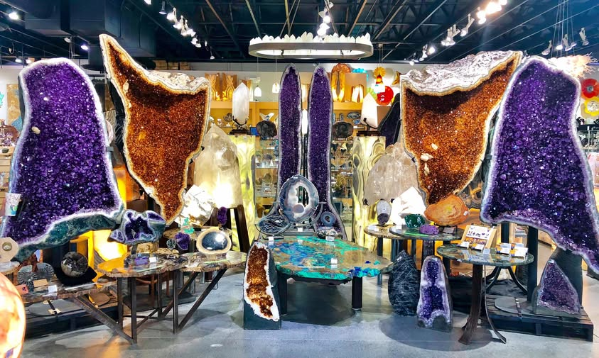

On my website, visitors will primarily be interested in viewing my portfolio and learning about my skills. They may also want to download my resume or connect with me for possible projects or job opportunities. The activities they'll likely complete on my site could include browsing through my portfolio to review specific case studies, projects, or creative works I have done. I will also provide a contact form or links to my social media accounts to make it easy for visitors to reach out to me. Some may want to engage in a conversation, asking questions about my work or requesting collaboration opportunities.

To complete any action on my site, such as reaching out or hiring me, visitors will need clear, easy-to-find contact details. This could be an email address, a contact form, or links to my social media profiles. If a visitor is looking to hire me, providing details about my availability and the type of work I am open to will be essential. If they are exploring my work, they should have access to thorough descriptions of my past projects, including challenges faced, solutions implemented, and final outcomes. Additionally, I will provide my resume in a downloadable format so that visitors can quickly see a summary of my qualifications. This should include details such as my work experience, education, skills, and certifications. Some visitors might want to access my portfolio in a more detailed or downloadable format as well.